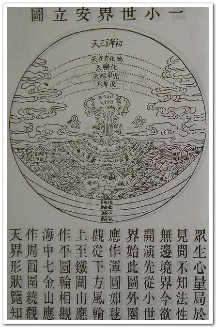
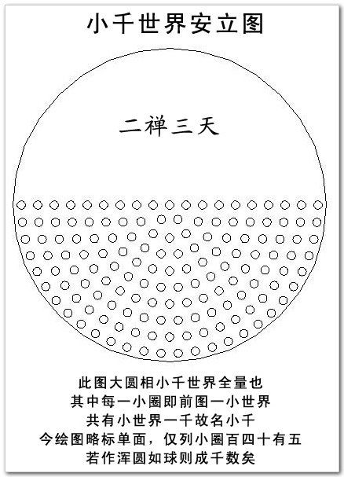
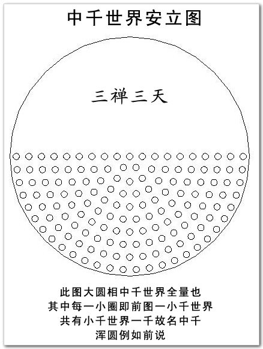
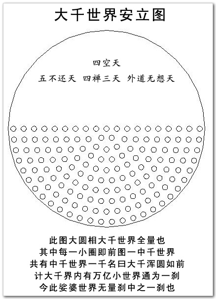
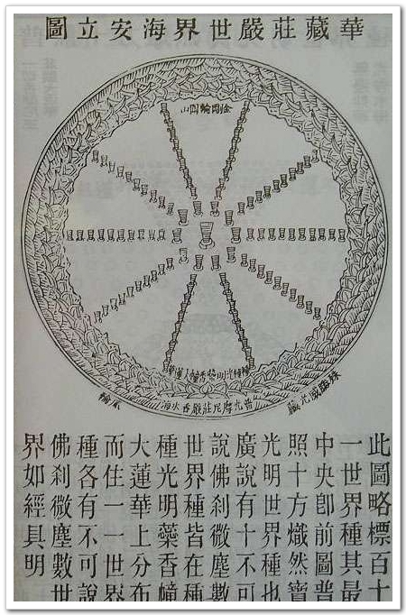
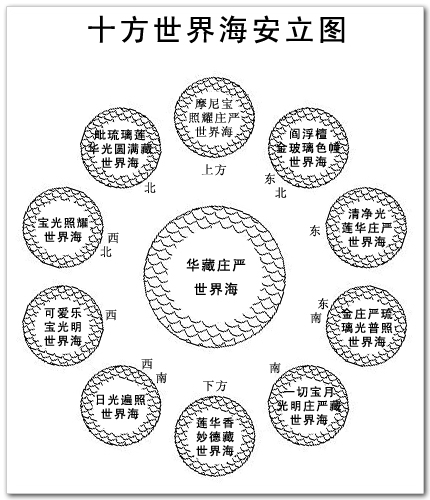
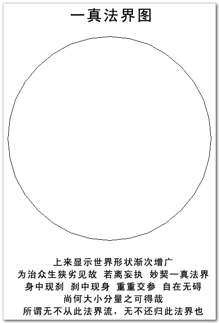

爱因斯坦在1905年完成了狭义相对论。狭义相对论在本质上改变了牛顿力学的空时观，揭示了作为物质存在形式的空间和时间统一成一个四维空时，揭露了力学运动和电磁运动在运动学上的统一性。爱因斯坦提出的“四维空时”，认为时间空间不可分割。而“世界”这一概念在诸佛经中屡次被提到，“世”代表了时间：过去、现在、未来三世，“界”代表了空间：东西南北上下十方，佛经中的“世界”概念表明了时间空间本不可分。并且佛陀所证入的境界远非四维，而是无量维度。
据赵朴初《俗语佛源》，“世界”这个词是从佛经中来的。在佛教中，世界的范围远远大于我们现在所了解的地球范围。
日月围绕着须弥山运转，日月照临的范围，即以须弥山为中心的四大洲，名为一小世界（包括地狱、天等领域）我们地球处于四大洲的南瞻部洲。如下一小世界图（来自或整理自香港版《大方广佛华严经》）：



三千大千世界：即大千世界，因为三个千连乘，所以叫三千大千世界。
《大智度论》中说：“百亿须弥山，百亿日月，名为三千大千世界。如是十方恒河沙三千大千世界，是名为一佛世界，是中更无余佛，实一释迦牟尼佛。”

注：亿有四种。瑜伽略纂二曰：“西方有四种亿：一、十万为亿。二、百万为亿。三、千万为亿。四、万万为亿。”按照现在的算法，大千世界内有1000x1000x1000即10亿个小世界。
位于“无边妙华光香水海”中央的“一切香摩尼王庄严莲花”上。普照十方炽然宝光明世界种有二十层，每一层都有佛：『最下方世界名最胜光遍照，佛刹微尘数世界周匝围绕，佛号净眼离垢灯；此上过佛刹微尘数世界，有世界名种种香，二佛刹微尘数世界周匝围绕，佛号师子光胜照；此上过佛刹微尘数世界，有世界名一切宝庄严普照光，三佛刹微尘数世界周匝围绕，佛号净光智胜幢；……此上过佛刹微尘数世界，至此世界名娑婆，十三佛刹微尘数世界周匝围绕，其佛即是毗卢遮那如来世尊；……此上过佛刹微尘数世界，有世界名妙宝焰，二十佛刹微尘数世界周匝围绕，佛号福德相光明。此遍照十方炽然宝光明世界种有：十佛刹微尘数回转形世界，十佛刹微尘数江河形世界，十佛刹微尘数漩流形世界，十佛刹微尘数轮辋形世界，十佛刹微尘数坛墠形世界，十佛刹微尘数树林形世界，十佛刹微尘数楼观形世界，十佛刹微尘数尸罗幢形世界，十佛刹微尘数普方形世界，十佛刹微尘数胎藏形世界，十佛刹微尘数莲华形世界，十佛刹微尘数佉勒迦形世界，十佛刹微尘数种种众生形世界，十佛刹微尘数佛相形世界，十佛刹微尘数圆光形世界，十佛刹微尘数云形世界，十佛刹微尘数网形世界，十佛刹微尘数门闼形世界，皆在此无边妙华光香水海及围绕此海香水河中。』——华严经
中央是普照十方炽然宝光明世界种，周围有十不可说佛刹微尘数世界种。



|
世： |
时间的迁流，过去、现在、未来，三世。 |
|
界： |
空间的划分，东西南北上下,十方。 |
|
世界： |
一个日月围绕照耀之下的时空。 |
|
小千世界： |
1000个世界。 |
|
中千世界： |
1000个小千世界。 |
|
大千世界： |
1000个中千世界。 |
|
三千大千世界： |
即大千世界，因为三个千连乘，所以叫三千大千世界。 |
|
一佛刹： |
一尊佛教化的国土，含括三千大千世界。 |
|
娑婆世界： |
释迦牟尼佛（法身即毗卢遮那佛）的佛刹，位于“普照十方炽然宝光明世界种”的第十三重。 |
|
普照十方炽然宝光明世界种： |
位于“无边妙华光香水海:”的中央。 |
|
无边妙华光香水海： |
位于“华藏庄严世界海”的中央。 |
|
华藏庄严世界海： |
位于“十方世界海”的中央。 |
|
十方世界海： |
在“一真法界”中。 |
|
一真法界： |
诸佛证悟，如来以“一真法界”为身。 |
佛教说明世界组织的情形：每一小世界，其形式皆同，中央有须弥山，透过大海，矗立在地轮上，地轮之下为金轮，再下为火轮，再下为风轮，风轮之外便是虚空。须弥山上下皆大，中央独小，日月即在山腰，四王天居山腰四面，忉利天在山顶，在忉利天的上空有夜摩天、兜率天、化乐天、他化自在天，再上则为色界十八天，及无色界四天。在须弥山的山根有七重金山，七重香水海，环绕之，每一重海，间一重山，在第七重金山外有碱海，碱海之外有大铁围山。在碱海四方有四大洲，即东胜身洲，南赡部洲，西牛货洲，北俱卢洲，叫做四天下，每洲旁各有两中洲，数百小洲而为眷属。如是九山、八海、一日月、四洲、六欲天、上覆以初禅三天，为一小世界。集一千小世界，上覆以二禅三天，为一小千世界。集一千小千世界，上覆以三禅三天，为一中千世界。集一千中千世界，上覆以四禅九天，及四空天，为一大千世界。因为这中间有三个千的倍数，所以大千世界，又名为三千大千世界。《大方广佛华严经 华藏世界品》有更详尽的文字介绍。
您了解了世界的概念的来历，您知道吗？佛教为中国文化带来了数万条词语，常用词语都有近五百条。比如：现在、如实、实际、真谛、单位、迷信、无常、净土、慈悲、相对、如是、上乘、有缘、化身、忏悔、生老病死、菩萨心肠、大千世界、不可思议、一丝不挂、芸芸众生、想入非非、盲人摸象、三心二意、在劫难逃、苦海无边、回头是岸、执迷不悟、恍然大悟、当头棒喝、走火入魔……。如果我们离开了这些词语，恐怕连话也说不成了。虽然我们可能不懂佛法，但确实已经潜移默化，受到了佛法的熏陶。下面这些词语也是：
十八层地狱，十八罗汉，十恶不赦，七手八脚，八字没见一撇，顽石点头，恶口伤人，称心如意，借花献佛，爱河，烦恼，浩劫，流通，家贼难防， 野狐禅，羚羊挂角，欲火，宿命，弹指，随缘，森罗万象，雁塔题名，悲观，药医不死病，面壁，相应，皆大欢喜，挂羊头，卖狗肉，顺水推舟，看风使帆，味同嚼蜡，放下屠刀，立地成佛，宗旨，单刀直入，单位，净土，空中楼阁，一日不做，一日不食，一心不乱，一报还一报，一丝不挂， 正宗，功德无量，本来面目，电光石火，叶落归根，四大皆空，头头是道，对牛弹琴， 开眼界，天花乱坠，无风起浪，无边，无事不登三宝殿， 三头六臂，大千世界，口头禅，门外汉，习气， 劫后余生，抛砖引玉，报应，伸手不见五指，作茧自缚，作贼心虚， 执着，有口皆碑，在劫难逃。
黄念祖老居士推测，佛经中的一个小世界，可能相当于一个我们所说的银河系。下面动画中的相关文字说明就是根据此说而写。但是，百度百科中说：“地球绕太阳公转，而整个太阳系则绕昂宿星团公转，昂宿星团绕银河中心公转，大约每240000年，太阳系会完成一次公转。 昂宿星团距离地球约420光年。”这样看来，一个小世界，或许相当于一个昂宿星团。
Source: http://www.fosss.org/Article/HuaZangShiJie/Index.html